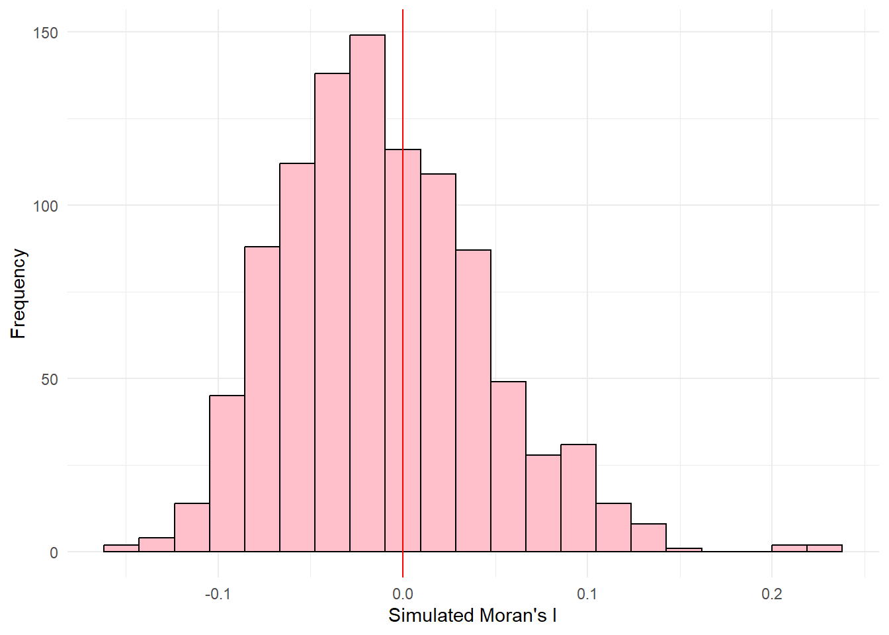
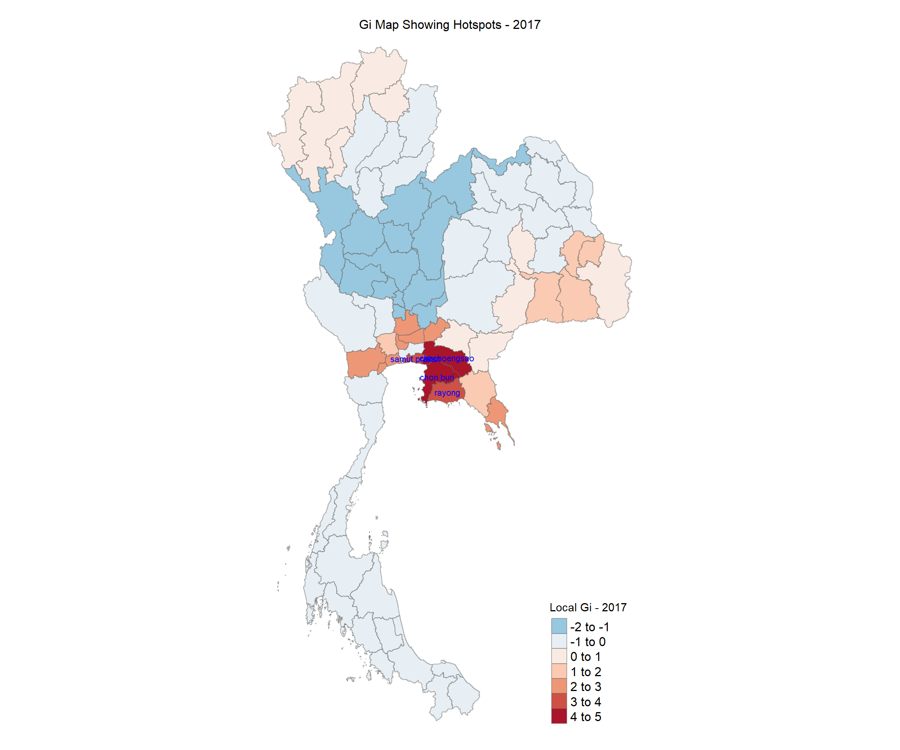
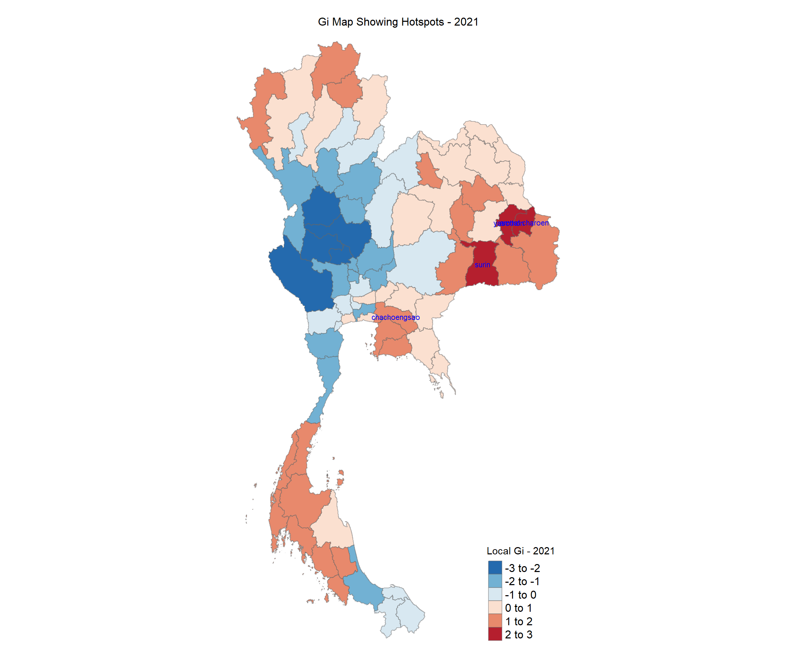

pacman::p_load(sf, tmap, tidyverse, spdep, sfdep, dplyr, tidyr)Take-home Exercise 2: Application of Geospatial Analysis Methods to Discover Thailand Drug Abuse at the Province Level
1.0 Introduction
Context:
Drug abuse is associated with significant negative health, financial and social consequences. Yet, illicit drug consumption remains highly prevalent and continues to be a growing problem worldwide. In 2021, 1 in 17 people, aged 15–64 in the world had used a drug in the past 12 months. Notwithstanding population growth, the estimated number of drug users grew from 240 million in 2011 to 296 million in 2021.
The geopolitics of Thailand which is near the Golden Triangle of Indochina, the largest drug production site in Asia, and the constant transportation infrastructure development made Thailand became market and transit routes for drug trafficking to the third countries.
In Thailand, drug abuse is one of the major social issue. There are about 2.7 million youths using drugs in Thailand. Among youths aged between 15 and 19 years, there are about 300,000 who have needs for drug treatment. Most of Thai youths involved with drugs are vocational-school students, which nearly doubles in number compared to secondary-school students.
Figure below shows geographic distribution of drug use cases by province and by year.
Objectives:
if the key indicators of drug abuse of Thailand are independent from space. (spatial independent, randomly distributed) (spatial weights and applications)
If the indicators of drug abuse is indeed spatial dependent, then, you would like to detect where are the clusters and outliers, and the hotspots. (no need for emerging hotspots)
Last but not least, you are also interested to investigate how the observation above evolve over time. (no need for spatial-temporal)
2.0 Importing Packages
sf
tmap
tidyverse
spdep
sfdep
dplyr
tidyr
3.0 Importing Datasets into Environment
geospatial (admin1 (province level))
thailand_boundary = st_read(dsn="data/geospatial/", layer="tha_admbnda_adm1_rtsd_20220121")Reading layer `tha_admbnda_adm1_rtsd_20220121' from data source `C:\marcus159260\IS415-GAA\take-home_exercises\take-home_ex02\data\geospatial' using driver `ESRI Shapefile' Simple feature collection with 77 features and 16 fields Geometry type: MULTIPOLYGON Dimension: XY Bounding box: xmin: 97.34336 ymin: 5.613038 xmax: 105.637 ymax: 20.46507 Geodetic CRS: WGS 84dim(thailand_boundary)[1] 77 17aspatial
thailand_sf <- read_csv("data/aspatial/thai_drug_offenses_2017_2022.csv")Rows: 7392 Columns: 5 ── Column specification ──────────────────────────────────────────────────────── Delimiter: "," chr (3): types_of_drug_offenses, province_th, province_en dbl (2): fiscal_year, no_cases ℹ Use `spec()` to retrieve the full column specification for this data. ℹ Specify the column types or set `show_col_types = FALSE` to quiet this message.dim(thailand_sf)[1] 7392 5
4.0 Data Wrangling + necessary Projection Transformation
4.1 Dropping redundant columns + Left Join
- We want to check for missing values, and spelling errors within the provinces. So we print out the unique provinces in the thailand_boundary and thailand_sf.
print(unique(thailand_boundary$ADM1_EN)) [1] "Bangkok" "Samut Prakan"
[3] "Nonthaburi" "Pathum Thani"
[5] "Phra Nakhon Si Ayutthaya" "Ang Thong"
[7] "Lop Buri" "Sing Buri"
[9] "Chai Nat" "Saraburi"
[11] "Chon Buri" "Rayong"
[13] "Chanthaburi" "Trat"
[15] "Chachoengsao" "Prachin Buri"
[17] "Nakhon Nayok" "Sa Kaeo"
[19] "Nakhon Ratchasima" "Buri Ram"
[21] "Surin" "Si Sa Ket"
[23] "Ubon Ratchathani" "Yasothon"
[25] "Chaiyaphum" "Amnat Charoen"
[27] "Bueng Kan" "Nong Bua Lam Phu"
[29] "Khon Kaen" "Udon Thani"
[31] "Loei" "Nong Khai"
[33] "Maha Sarakham" "Roi Et"
[35] "Kalasin" "Sakon Nakhon"
[37] "Nakhon Phanom" "Mukdahan"
[39] "Chiang Mai" "Lamphun"
[41] "Lampang" "Uttaradit"
[43] "Phrae" "Nan"
[45] "Phayao" "Chiang Rai"
[47] "Mae Hong Son" "Nakhon Sawan"
[49] "Uthai Thani" "Kamphaeng Phet"
[51] "Tak" "Sukhothai"
[53] "Phitsanulok" "Phichit"
[55] "Phetchabun" "Ratchaburi"
[57] "Kanchanaburi" "Suphan Buri"
[59] "Nakhon Pathom" "Samut Sakhon"
[61] "Samut Songkhram" "Phetchaburi"
[63] "Prachuap Khiri Khan" "Nakhon Si Thammarat"
[65] "Krabi" "Phangnga"
[67] "Phuket" "Surat Thani"
[69] "Ranong" "Chumphon"
[71] "Songkhla" "Satun"
[73] "Trang" "Phatthalung"
[75] "Pattani" "Yala"
[77] "Narathiwat" cat('\n---------------------\n')
---------------------print(unique(thailand_sf$province_en)) [1] "Bangkok" "Chai Nat"
[3] "Nonthaburi" "Pathum Thani"
[5] "Phra Nakhon Si Ayutthaya" "Loburi"
[7] "Samut Prakan" "Saraburi"
[9] "Sing Buri" "Ang Thong"
[11] "Chanthaburi" "Chachoengsao"
[13] "Chon Buri" "Trat"
[15] "Nakhon Nayok" "Prachin Buri"
[17] "Rayong" "Sa Kaeo"
[19] "Chaiyaphum" "Nakhon Ratchasima"
[21] "Buri Ram" "Yasothon"
[23] "Si Sa Ket" "Surin"
[25] "Amnat Charoen" "Ubon Ratchathani"
[27] "Kalasin" "Khon Kaen"
[29] "Nakhon Phanom" "buogkan"
[31] "Maha Sarakham" "Mukdahan"
[33] "Roi Et" "Loei"
[35] "Sakon Nakhon" "Nong Khai"
[37] "Nong Bua Lam Phu" "Udon Thani"
[39] "Chiang Rai" "Chiang Mai"
[41] "Nan" "Phayao"
[43] "Phrae" "Mae Hong Son"
[45] "Lampang" "Lamphun"
[47] "Kamphaeng Phet" "Tak"
[49] "Nakhon Sawan" "Phichit"
[51] "Phitsanulok" "Phetchabun"
[53] "Sukhothai" "Uttaradit"
[55] "Uthai Thani" "Kanchanaburi"
[57] "Nakhon Pathom" "Prachuap Khiri Khan"
[59] "Phetchaburi" "Ratchaburi"
[61] "Samut Songkhram" "Samut Sakhon"
[63] "Suphan Buri" "Krabi"
[65] "Chumphon" "Nakhon Si Thammarat"
[67] "Phangnga" "Phuket"
[69] "Ranong" "Surat Thani"
[71] "Trang" "Narathiwat"
[73] "Pattani" "Phatthalung"
[75] "Yala" "Songkhla"
[77] "Satun" Here we notice that in thailand_sf, we have the provinces: ‘Lop Buri’ and ‘Bueng Kan’ spelled wrongly, as ‘’Loburi’ and ‘buogkan’. Hence, we need to perform data transformation (renaming of the provinces) and do necessary trimming and conversion to lowercase. After which, we will perform a left join using the common identifier (province) and remove the missing values.
- First, we need to mutate to do the necessary data transformation
thailand_boundary <- thailand_boundary %>%
mutate(ADM1_EN = str_to_lower(ADM1_EN), # Convert to lowercase
ADM1_EN = str_trim(ADM1_EN))
thailand_sf <- thailand_sf %>%
mutate(province_en = str_to_lower(province_en), # Convert to lowercase
province_en = str_trim(province_en),
province_en = gsub("^loburi$", "lop buri", province_en), # Rename 'loburi' to 'lop buri'
province_en = gsub("^buogkan$", "bueng kan", province_en)) print(unique(thailand_sf$province_en)) [1] "bangkok" "chai nat"
[3] "nonthaburi" "pathum thani"
[5] "phra nakhon si ayutthaya" "lop buri"
[7] "samut prakan" "saraburi"
[9] "sing buri" "ang thong"
[11] "chanthaburi" "chachoengsao"
[13] "chon buri" "trat"
[15] "nakhon nayok" "prachin buri"
[17] "rayong" "sa kaeo"
[19] "chaiyaphum" "nakhon ratchasima"
[21] "buri ram" "yasothon"
[23] "si sa ket" "surin"
[25] "amnat charoen" "ubon ratchathani"
[27] "kalasin" "khon kaen"
[29] "nakhon phanom" "bueng kan"
[31] "maha sarakham" "mukdahan"
[33] "roi et" "loei"
[35] "sakon nakhon" "nong khai"
[37] "nong bua lam phu" "udon thani"
[39] "chiang rai" "chiang mai"
[41] "nan" "phayao"
[43] "phrae" "mae hong son"
[45] "lampang" "lamphun"
[47] "kamphaeng phet" "tak"
[49] "nakhon sawan" "phichit"
[51] "phitsanulok" "phetchabun"
[53] "sukhothai" "uttaradit"
[55] "uthai thani" "kanchanaburi"
[57] "nakhon pathom" "prachuap khiri khan"
[59] "phetchaburi" "ratchaburi"
[61] "samut songkhram" "samut sakhon"
[63] "suphan buri" "krabi"
[65] "chumphon" "nakhon si thammarat"
[67] "phangnga" "phuket"
[69] "ranong" "surat thani"
[71] "trang" "narathiwat"
[73] "pattani" "phatthalung"
[75] "yala" "songkhla"
[77] "satun" By printing the unique thailand_sf provinces again, we get the correct names of the 2 provinces.
- Second, we perform a left join.
thailand_left_join <- thailand_boundary %>%
left_join(thailand_sf, by = c("ADM1_EN" = "province_en")) %>%
select(3, 17:19, 21)missing_provinces <- thailand_left_join %>%
filter(is.na(no_cases)) %>% # Check for NA in the case column
select(ADM1_EN)
print(missing_provinces)Simple feature collection with 0 features and 1 field
Bounding box: xmin: NA ymin: NA xmax: NA ymax: NA
Geodetic CRS: WGS 84
[1] ADM1_EN geometry
<0 rows> (or 0-length row.names)We see that there are no rows with missing values.
4.2 Dropping and summing total number of drug cases
Understanding our data
- unique years, types of drug offenses
unique_years = unique(thailand_left_join$fiscal_year)
unique_types = unique(thailand_left_join$types_of_drug_offenses)
unique_years[1] 2017 2018 2019 2020 2021 2022cat('\n')unique_types [1] "drug_use_cases"
[2] "suspects_in_drug_use_cases"
[3] "possession_cases"
[4] "suspects_in_possession_cases"
[5] "possession_with_intent_to_distribute_cases"
[6] "suspects_in_possession_with_intent_to_distribute_cases"
[7] "trafficking_cases"
[8] "suspects_in_trafficking_cases"
[9] "production_cases"
[10] "suspects_in_production_cases"
[11] "import_cases"
[12] "suspects_in_import_cases"
[13] "export_cases"
[14] "suspects_in_export_cases"
[15] "conspiracy_cases"
[16] "suspects_in_conspiracy_cases" Filtering and Data Wrangling
- As we are only interested in drug_cases under the types_of_drug_offenses, we need to filter based on that. We need to also filter the rows where the total_cases are 0 and sort the years in ascending (2017-2022).
thailand <- thailand_left_join %>%
filter(types_of_drug_offenses == "drug_use_cases") %>%
filter(no_cases > 0) %>%
arrange(fiscal_year)
thailandSimple feature collection with 462 features and 4 fields
Geometry type: MULTIPOLYGON
Dimension: XY
Bounding box: xmin: 97.34336 ymin: 5.613038 xmax: 105.637 ymax: 20.46507
Geodetic CRS: WGS 84
First 10 features:
ADM1_EN fiscal_year types_of_drug_offenses no_cases
1 bangkok 2017 drug_use_cases 11871
2 samut prakan 2017 drug_use_cases 820
3 nonthaburi 2017 drug_use_cases 553
4 pathum thani 2017 drug_use_cases 450
5 phra nakhon si ayutthaya 2017 drug_use_cases 378
6 ang thong 2017 drug_use_cases 208
7 lop buri 2017 drug_use_cases 727
8 sing buri 2017 drug_use_cases 127
9 chai nat 2017 drug_use_cases 200
10 saraburi 2017 drug_use_cases 69
geometry
1 MULTIPOLYGON (((100.6139 13...
2 MULTIPOLYGON (((100.7306 13...
3 MULTIPOLYGON (((100.3415 14...
4 MULTIPOLYGON (((100.8916 14...
5 MULTIPOLYGON (((100.5131 14...
6 MULTIPOLYGON (((100.3332 14...
7 MULTIPOLYGON (((101.3453 15...
8 MULTIPOLYGON (((100.3691 15...
9 MULTIPOLYGON (((100.1199 15...
10 MULTIPOLYGON (((101.3994 15...Pivoting the fiscal years to get unique Polygons
- We do this because when we do polygonal rendering, there are 6 copies (years 2017-2022) of the same polygons, which will slow down the time it takes to execute the process such as the poly2nb() spatial weights when we attempt to find the neighbours of regions. Hence, we need to reshape the dataframe using pivot_wider() to reduce the number of rows, approximately (462/6 = 77 rows), and make the geometry polygons unique, while keeping our provinces unique as well. This is done by transposing the fiscal_year and no_cases to more columns by the number of cases in each year (no_cases_<year>).
# Pivoting data to widen fiscal_year into separate no_cases columns by year
thailand <- thailand %>%
group_by(ADM1_EN, geometry) %>%
pivot_wider(names_from = fiscal_year,
values_from = no_cases,
names_prefix = "no_cases_") %>%
ungroup()thailand <- thailand %>%
mutate(total_cases = no_cases_2017 + no_cases_2018 +
no_cases_2019 + no_cases_2020 +
no_cases_2021 + no_cases_2022)4.3 Projection Transformation
Since the EPSG code is 4326, which is the global code. We want to change both the EPSG code of the boundary data and working data to Thailand’s global projection system. Acquiring the code from https://epsg.io/32647
- We will transform the it to Thailand’s projected coordinate system (UTM Zone 47N) with the EPSG code: 32647
thailand <- thailand %>%
st_transform(crs=32647)st_crs(thailand)4.3 Plotting the basemap object to visualise structure with provinces
#|fig-width: 12
#|fig-height: 10
#|
basemap <- tm_shape(thailand) +
tm_borders(alpha = 0.5) +
tm_text("ADM1_EN", size=0.4) +
tm_layout(
main.title = "Basemap with provinces",
main.title.size = 1,
main.title.position = "center",
legend.show = FALSE,
frame = FALSE)
basemap4.4 Writing and Reading into RDS format
#thailand combined dataframe
write_rds(thailand, "data/rds/thailand.rds")thailand <- read_rds("data/rds/thailand.rds")5.0 Exploratory Spatial Data Analysis
- min and max total no of drug cases
min_cases = min(thailand$total_cases, na.rm = FALSE)
max_cases = max(thailand$total_cases, na.rm = FALSE)
min_cases[1] 1426cat("\n")max_cases[1] 655225.1 Plotting
5.1.1 Total number of cases across the years
- This plot depicts the total number of drug cases for each year and observe where are the highest drug cases found in which area of provinces.
# Pivot data back to long format for faceting
thailand_long <- thailand %>%
pivot_longer(
cols = starts_with("no_cases_"), # Pivot all case columns
names_to = "fiscal_year",
values_to = "no_cases",
names_prefix = "no_cases_"
)#|fig-width: 12
#|fig-height: 10
# Define custom breaks based on the range of all years
min_cases <- min(thailand_long$no_cases, na.rm = TRUE)
max_cases <- max(thailand_long$no_cases, na.rm = TRUE)
custom_breaks <- seq(min_cases, max_cases, length.out = 5)
# Create the faceted plot using tm_facets()
faceted_plot <- tm_shape(thailand_long) +
tm_polygons(
col = "no_cases",
palette = "Blues",
breaks = custom_breaks,
title = "Drug Cases"
) +
tm_borders(alpha = 0.5) +
tm_facets(
by = "fiscal_year", # Facet by fiscal year
free.coords = FALSE # Keep the same coordinates for all plots
) +
tm_layout(
main.title = "Drug Cases Across Fiscal Years",
legend.outside = TRUE, # Single legend outside
legend.text.size = 0.8
)
# Show the faceted plot
faceted_plotWarning: One tm layer group has duplicated layer types, which are omitted. To
draw multiple layers of the same type, use multiple layer groups (i.e. specify
tm_shape prior to each of them).
The plots show that the one of the highest drug use cases in 2021 is in the east, north-west, south area, while in 2018 and 2019, the highest drug use case is spotted in the center area.
5.1.2 Top 5 Provinces with the highest number of drug cases over all the years
# Step 1: Find the top 5 provinces with the highest total cases
top_5_provinces <- thailand %>%
arrange(desc(total_cases)) %>%
slice_head(n = 5) # Select the top 5 rows
# Step 2: Highlight the top 5 provinces
provinces <- tm_shape(thailand) +
tm_polygons() +
tm_text("ADM1_EN", size = 0.5)
# Apply custom breaks to the total_cases plot
total_cases <- tm_shape(thailand) +
tm_polygons("total_cases",
breaks = custom_breaks, # Apply the custom breaks
palette = "Blues", # Color palette
title = "Total Cases") +
tm_borders(alpha = 0.5)
# Step 3: Highlight the top 5 provinces on the same plot
highlight_top_5 <- tm_shape(top_5_provinces) +
tm_borders(col = "red", lwd = 3) + # Use red borders to highlight
tm_text("ADM1_EN", size = 0.7, col = "black") # Optional: Label them
# Step 4: Arrange the plots
tmap_arrange(provinces, total_cases + highlight_top_5, asp = 1, ncol = 2)Warning: One tm layer group has duplicated layer types, which are omitted. To
draw multiple layers of the same type, use multiple layer groups (i.e. specify
tm_shape prior to each of them).Warning: Values have found that are higher than the highest break5.1.3 Visualising Quantile Interval Classification over all the years
#|fig-width: 15
#|fig-height: 12
quantile <- tm_shape(thailand) +
tm_polygons("total_cases",
palette = "Blues",
style="quantile",
n=10) +
tm_layout(main.title = "Quantile interval classification",
main.title.size = 1,
main.title.position = "Center",
frame = FALSE,
legend.title.size = 0.8, # Reduce the title size
legend.text.size = 0.5, # Reduce the text size
legend.width = 0.3,
legend.position = c("right", "bottom"))
quantileSome legend labels were too wide. These labels have been resized to 0.44, 0.41, 0.41, 0.41, 0.41. Increase legend.width (argument of tm_layout) to make the legend wider and therefore the labels larger.6.0 Global Measures of Spatial Autocorrelation
- If we attempt to use contiguity-based spatial weights to find neighbours, and use the queen method, we come up with a region that is not linked to any neighbours, which is incorrect.
wm_q <- poly2nb(thailand,
queen = TRUE)Warning in poly2nb(thailand, queen = TRUE): some observations have no neighbours;
if this seems unexpected, try increasing the snap argument.Warning in poly2nb(thailand, queen = TRUE): neighbour object has 2 sub-graphs;
if this sub-graph count seems unexpected, try increasing the snap argument.summary(wm_q)Neighbour list object:
Number of regions: 77
Number of nonzero links: 352
Percentage nonzero weights: 5.93692
Average number of links: 4.571429
1 region with no links:
67
2 disjoint connected subgraphs
Link number distribution:
0 1 2 3 4 5 6 7 8 9
1 1 5 17 15 17 10 5 4 2
1 least connected region:
14 with 1 link
2 most connected regions:
29 51 with 9 linksLets print out the region with the 0 link. It turns out to be “Phuket”.
thailand$ADM1_EN[65][1] "krabi"Hence, instead of using contiguity-based methods to find neighbours, we need to swap to using distance-based methods instead to find neighbours and do our global spatial autocorrelation.
6.1 Configuring and Binding coordinates
Computing longitude and latitude to achieve coordinates
- longitude
longitude <- map_dbl(thailand$geometry, ~st_centroid(.x)[[1]])- latitude
latitude <- map_dbl(thailand$geometry, ~st_centroid(.x)[[2]])- bind the coordinates
coords <- cbind(longitude, latitude)head(coords) longitude latitude
[1,] 675514.6 1523087
[2,] 685033.7 1503755
[3,] 650477.2 1539777
[4,] 681656.0 1555581
[5,] 664627.1 1586462
[6,] 645239.0 16171186.2 Computing distance-based neighbours
k1 <- knn2nb(knearneigh(coords))Warning in knn2nb(knearneigh(coords)): neighbour object has 19 sub-graphsk1dists <- unlist(nbdists(k1, coords, longlat = FALSE))
summary(k1dists) Min. 1st Qu. Median Mean 3rd Qu. Max.
21548 51966 64530 63281 76823 110987
This summary report shows that the largest first nearest neighbour distance is 110987 meters (UTM). As dnearneigh accepts meters and we need specify longlat = FALSE, lets round it up to 111000 meters and use this as our upper threshold will ensure us that all regions will at least have 1 neighbour.
6.2.1 Attempting Fixed Distance
- within 111000 meters radius
wm_d111000 <- dnearneigh(coords, 0, 111000, longlat = FALSE)Warning in dnearneigh(coords, 0, 111000, longlat = FALSE): neighbour object has
2 sub-graphswm_d111000Neighbour list object:
Number of regions: 77
Number of nonzero links: 350
Percentage nonzero weights: 5.903188
Average number of links: 4.545455
2 disjoint connected subgraphstable(thailand$ADM1_EN, card(wm_d111000))
1 2 3 4 5 6 7 8 9 10 11 12 13 14
amnat charoen 0 0 0 1 0 0 0 0 0 0 0 0 0 0
ang thong 0 0 0 0 0 0 0 0 0 0 1 0 0 0
bangkok 0 0 0 0 0 0 0 0 0 0 0 1 0 0
bueng kan 0 1 0 0 0 0 0 0 0 0 0 0 0 0
buri ram 0 1 0 0 0 0 0 0 0 0 0 0 0 0
chachoengsao 0 0 0 0 0 0 0 0 1 0 0 0 0 0
chai nat 0 0 0 0 0 0 1 0 0 0 0 0 0 0
chaiyaphum 0 1 0 0 0 0 0 0 0 0 0 0 0 0
chanthaburi 0 0 0 0 1 0 0 0 0 0 0 0 0 0
chiang mai 0 0 1 0 0 0 0 0 0 0 0 0 0 0
chiang rai 1 0 0 0 0 0 0 0 0 0 0 0 0 0
chon buri 0 0 0 0 0 1 0 0 0 0 0 0 0 0
chumphon 1 0 0 0 0 0 0 0 0 0 0 0 0 0
kalasin 0 0 0 1 0 0 0 0 0 0 0 0 0 0
kamphaeng phet 0 0 0 0 1 0 0 0 0 0 0 0 0 0
kanchanaburi 0 1 0 0 0 0 0 0 0 0 0 0 0 0
khon kaen 0 0 1 0 0 0 0 0 0 0 0 0 0 0
krabi 0 0 0 0 1 0 0 0 0 0 0 0 0 0
lampang 0 0 1 0 0 0 0 0 0 0 0 0 0 0
lamphun 0 1 0 0 0 0 0 0 0 0 0 0 0 0
loei 1 0 0 0 0 0 0 0 0 0 0 0 0 0
lop buri 0 0 0 0 0 0 1 0 0 0 0 0 0 0
mae hong son 1 0 0 0 0 0 0 0 0 0 0 0 0 0
maha sarakham 0 0 1 0 0 0 0 0 0 0 0 0 0 0
mukdahan 0 0 0 0 1 0 0 0 0 0 0 0 0 0
nakhon nayok 0 0 0 0 0 0 0 0 0 1 0 0 0 0
nakhon pathom 0 0 0 0 0 0 0 0 0 1 0 0 0 0
nakhon phanom 0 1 0 0 0 0 0 0 0 0 0 0 0 0
nakhon ratchasima 1 0 0 0 0 0 0 0 0 0 0 0 0 0
nakhon sawan 0 0 0 0 0 1 0 0 0 0 0 0 0 0
nakhon si thammarat 0 0 0 1 0 0 0 0 0 0 0 0 0 0
nan 0 1 0 0 0 0 0 0 0 0 0 0 0 0
narathiwat 0 1 0 0 0 0 0 0 0 0 0 0 0 0
nong bua lam phu 0 0 0 1 0 0 0 0 0 0 0 0 0 0
nong khai 0 0 1 0 0 0 0 0 0 0 0 0 0 0
nonthaburi 0 0 0 0 0 0 0 0 0 0 0 0 1 0
pathum thani 0 0 0 0 0 0 0 0 0 0 0 0 0 1
pattani 0 0 1 0 0 0 0 0 0 0 0 0 0 0
phangnga 0 0 1 0 0 0 0 0 0 0 0 0 0 0
phatthalung 0 0 0 1 0 0 0 0 0 0 0 0 0 0
phayao 0 1 0 0 0 0 0 0 0 0 0 0 0 0
phetchabun 0 0 1 0 0 0 0 0 0 0 0 0 0 0
phetchaburi 0 0 0 1 0 0 0 0 0 0 0 0 0 0
phichit 0 0 0 1 0 0 0 0 0 0 0 0 0 0
phitsanulok 0 0 0 1 0 0 0 0 0 0 0 0 0 0
phra nakhon si ayutthaya 0 0 0 0 0 0 0 0 0 0 0 0 1 0
phrae 0 0 0 1 0 0 0 0 0 0 0 0 0 0
phuket 0 1 0 0 0 0 0 0 0 0 0 0 0 0
prachin buri 0 0 0 0 0 1 0 0 0 0 0 0 0 0
prachuap khiri khan 1 0 0 0 0 0 0 0 0 0 0 0 0 0
ranong 0 1 0 0 0 0 0 0 0 0 0 0 0 0
ratchaburi 0 0 0 0 1 0 0 0 0 0 0 0 0 0
rayong 0 0 1 0 0 0 0 0 0 0 0 0 0 0
roi et 0 0 0 0 1 0 0 0 0 0 0 0 0 0
sa kaeo 0 0 1 0 0 0 0 0 0 0 0 0 0 0
sakon nakhon 0 0 0 1 0 0 0 0 0 0 0 0 0 0
samut prakan 0 0 0 0 0 0 0 0 0 1 0 0 0 0
samut sakhon 0 0 0 0 0 0 0 0 1 0 0 0 0 0
samut songkhram 0 0 0 0 0 0 0 1 0 0 0 0 0 0
saraburi 0 0 0 0 0 0 0 0 1 0 0 0 0 0
satun 0 0 1 0 0 0 0 0 0 0 0 0 0 0
si sa ket 0 1 0 0 0 0 0 0 0 0 0 0 0 0
sing buri 0 0 0 0 0 0 0 0 0 1 0 0 0 0
songkhla 0 0 1 0 0 0 0 0 0 0 0 0 0 0
sukhothai 0 0 0 1 0 0 0 0 0 0 0 0 0 0
suphan buri 0 0 0 0 0 0 0 0 1 0 0 0 0 0
surat thani 0 0 0 1 0 0 0 0 0 0 0 0 0 0
surin 0 1 0 0 0 0 0 0 0 0 0 0 0 0
tak 1 0 0 0 0 0 0 0 0 0 0 0 0 0
trang 0 0 0 1 0 0 0 0 0 0 0 0 0 0
trat 1 0 0 0 0 0 0 0 0 0 0 0 0 0
ubon ratchathani 0 1 0 0 0 0 0 0 0 0 0 0 0 0
udon thani 0 0 1 0 0 0 0 0 0 0 0 0 0 0
uthai thani 0 0 0 0 0 1 0 0 0 0 0 0 0 0
uttaradit 0 0 1 0 0 0 0 0 0 0 0 0 0 0
yala 0 1 0 0 0 0 0 0 0 0 0 0 0 0
yasothon 0 0 1 0 0 0 0 0 0 0 0 0 0 0n_comp <- n.comp.nb(wm_d111000)
n_comp$nc[1] 2- This shows that there are 2 disjoined subgraphs, meaning that there are two distinct groups that are not connected each other. Below shows that the first subgraph contains 61 regions, while the second subgraph contains 14 regions.
table(n_comp$comp.id)
1 2
63 14 Plotting fixed distance weight matrix
# Plot the boundary and neighborhood structures with adjusted limits
plot(thailand$geometry, border="lightgrey")
plot(wm_d111000, coords, add=TRUE)
plot(k1, coords, add=TRUE, col="red", length=0.08)- Plot 1st nearest neighbours (red lines) vs Distance link of neighbours within the cut-off distance of 111000 meters (black lines)
par(mfrow=c(1,2))
plot(thailand$geometry, border="lightgrey", main="1st nearest neighbours")
plot(k1, coords, add=TRUE, col="red", length=0.08)
plot(thailand$geometry, border="lightgrey", main="Distance link")
plot(wm_d111000, coords, add=TRUE, pch = 19, cex = 0.6)6.2.2 Attempting Adaptive Distance
Computing Adaptive Distance Weight matrix
- Lets fix k=6, and no go too far ahead as greater the k, the further the search of neighbours would be.
knn6 <- knn2nb(knearneigh(coords, k=6))
knn6Neighbour list object:
Number of regions: 77
Number of nonzero links: 462
Percentage nonzero weights: 7.792208
Average number of links: 6
Non-symmetric neighbours liststr(knn6)List of 77
$ : int [1:6] 2 3 4 5 59 60
$ : int [1:6] 1 3 4 11 59 60
$ : int [1:6] 1 2 4 5 59 60
$ : int [1:6] 1 2 3 5 17 59
$ : int [1:6] 1 3 4 6 10 59
$ : int [1:6] 4 5 8 9 10 58
$ : int [1:6] 5 6 8 9 10 17
$ : int [1:6] 5 6 7 9 10 58
$ : int [1:6] 6 7 8 48 49 58
$ : int [1:6] 4 5 6 7 8 17
$ : int [1:6] 1 2 12 13 15 16
$ : int [1:6] 1 2 11 13 14 15
$ : int [1:6] 11 12 14 15 16 18
$ : int [1:6] 11 12 13 15 16 18
$ : int [1:6] 1 2 11 12 16 17
$ : int [1:6] 4 10 11 15 17 18
$ : int [1:6] 1 4 5 10 15 16
$ : int [1:6] 13 15 16 17 19 20
$ : int [1:6] 7 10 16 17 20 25
$ : int [1:6] 18 19 21 22 33 34
$ : int [1:6] 20 22 23 24 33 34
$ : int [1:6] 20 21 23 24 26 34
$ : int [1:6] 21 22 24 26 34 38
$ : int [1:6] 22 23 26 34 35 38
$ : int [1:6] 7 19 28 29 33 55
$ : int [1:6] 22 23 24 34 35 38
$ : int [1:6] 28 30 32 35 36 37
$ : int [1:6] 25 29 30 31 32 35
$ : int [1:6] 25 28 30 33 34 35
$ : int [1:6] 27 28 29 32 35 36
$ : int [1:6] 28 30 32 42 53 55
$ : int [1:6] 27 28 30 31 35 36
$ : int [1:6] 20 21 24 29 34 35
$ : int [1:6] 21 24 26 33 35 38
$ : int [1:6] 24 29 33 34 36 38
$ : int [1:6] 27 30 32 35 37 38
$ : int [1:6] 24 27 30 35 36 38
$ : int [1:6] 24 26 34 35 36 37
$ : int [1:6] 40 41 43 45 46 47
$ : int [1:6] 39 41 43 47 51 52
$ : int [1:6] 39 40 42 43 45 52
$ : int [1:6] 31 41 43 44 52 53
$ : int [1:6] 40 41 42 44 45 52
$ : int [1:6] 31 41 42 43 45 46
$ : int [1:6] 39 41 42 43 44 46
$ : int [1:6] 39 40 41 43 44 45
$ : int [1:6] 39 40 41 43 45 46
$ : int [1:6] 7 8 9 49 50 54
$ : int [1:6] 8 9 48 50 57 58
$ : int [1:6] 48 49 51 52 53 54
$ : int [1:6] 40 48 49 50 52 54
$ : int [1:6] 41 42 43 50 51 53
$ : int [1:6] 31 42 50 52 54 55
$ : int [1:6] 9 48 50 52 53 55
$ : int [1:6] 7 25 31 48 53 54
$ : int [1:6] 1 3 59 60 61 62
$ : int [1:6] 6 9 49 56 58 59
$ : int [1:6] 5 6 8 9 57 59
$ : int [1:6] 1 3 4 5 60 61
$ : int [1:6] 1 2 3 56 59 61
$ : int [1:6] 1 3 56 59 60 62
$ : int [1:6] 3 56 59 60 61 63
$ : int [1:6] 2 56 60 61 62 70
$ : int [1:6] 65 66 67 68 73 74
$ : int [1:6] 64 66 67 68 73 74
$ : int [1:6] 64 65 67 68 69 73
$ : int [1:6] 64 65 66 68 73 74
$ : int [1:6] 64 65 66 67 69 70
$ : int [1:6] 64 65 66 67 68 70
$ : int [1:6] 63 64 65 66 68 69
$ : int [1:6] 72 73 74 75 76 77
$ : int [1:6] 64 71 73 74 75 76
$ : int [1:6] 64 65 67 71 72 74
$ : int [1:6] 64 65 71 72 73 75
$ : int [1:6] 71 72 73 74 76 77
$ : int [1:6] 71 72 73 74 75 77
$ : int [1:6] 71 72 73 74 75 76
- attr(*, "region.id")= chr [1:77] "1" "2" "3" "4" ...
- attr(*, "call")= language knearneigh(x = coords, k = 6)
- attr(*, "sym")= logi FALSE
- attr(*, "type")= chr "knn"
- attr(*, "knn-k")= num 6
- attr(*, "class")= chr "nb"
- attr(*, "ncomp")=List of 2
..$ nc : int 1
..$ comp.id: int [1:77] 1 1 1 1 1 1 1 1 1 1 ...table(thailand$ADM1_EN, card(knn6))
6
amnat charoen 1
ang thong 1
bangkok 1
bueng kan 1
buri ram 1
chachoengsao 1
chai nat 1
chaiyaphum 1
chanthaburi 1
chiang mai 1
chiang rai 1
chon buri 1
chumphon 1
kalasin 1
kamphaeng phet 1
kanchanaburi 1
khon kaen 1
krabi 1
lampang 1
lamphun 1
loei 1
lop buri 1
mae hong son 1
maha sarakham 1
mukdahan 1
nakhon nayok 1
nakhon pathom 1
nakhon phanom 1
nakhon ratchasima 1
nakhon sawan 1
nakhon si thammarat 1
nan 1
narathiwat 1
nong bua lam phu 1
nong khai 1
nonthaburi 1
pathum thani 1
pattani 1
phangnga 1
phatthalung 1
phayao 1
phetchabun 1
phetchaburi 1
phichit 1
phitsanulok 1
phra nakhon si ayutthaya 1
phrae 1
phuket 1
prachin buri 1
prachuap khiri khan 1
ranong 1
ratchaburi 1
rayong 1
roi et 1
sa kaeo 1
sakon nakhon 1
samut prakan 1
samut sakhon 1
samut songkhram 1
saraburi 1
satun 1
si sa ket 1
sing buri 1
songkhla 1
sukhothai 1
suphan buri 1
surat thani 1
surin 1
tak 1
trang 1
trat 1
ubon ratchathani 1
udon thani 1
uthai thani 1
uttaradit 1
yala 1
yasothon 1Plotting adaptive distance weight matrix
plot(thailand$geometry, border="lightgrey")
plot(knn6, coords, pch = 19, cex = 0.6, add = TRUE, col = "red")Decision:
We find that due to the result of 2 disjointed subgraphs in fixed distance, fixed distance method is not very good because the regions should have at least a link to each other, not separation or disjoint. From the adaptive distance plot, we can see that there is no disjoint in the neighbour links, deeming adaptive distance the more suitable method to use. We shall use adaptive distance for the rest, even for local spatial autocorrelation.
6.2.3 Global Moran I: Access Spatial Autocorrelation using Adaptive Distance
Next, nb2listw() is used to convert the nb object into spatial weights object.
We should also fix our style=“w”.
rsknn6 <- nb2listw(knn6,
style="W",
zero.policy = TRUE)
rsknn6Characteristics of weights list object:
Neighbour list object:
Number of regions: 77
Number of nonzero links: 462
Percentage nonzero weights: 7.792208
Average number of links: 6
Non-symmetric neighbours list
Weights style: W
Weights constants summary:
n nn S0 S1 S2
W 77 5929 77 22.77778 319.61111. Global Moran’s I Test
moran.test(thailand$total_cases,
listw=rsknn6,
zero.policy = TRUE,
na.action=na.omit)
Moran I test under randomisation
data: thailand$total_cases
weights: rsknn6
Moran I statistic standard deviate = 1.5743, p-value = 0.0577
alternative hypothesis: greater
sample estimates:
Moran I statistic Expectation Variance
0.073698166 -0.013157895 0.003043706 2. .Computing Monte Carlo Moran’s I
set a seed of 1234
number of simulations = 1000
set.seed(1234)
bperm_moran= moran.mc(thailand$total_cases,
listw=rsknn6,
nsim=999,
zero.policy = TRUE,
na.action=na.omit)
bperm_moran
Monte-Carlo simulation of Moran I
data: thailand$total_cases
weights: rsknn6
number of simulations + 1: 1000
statistic = 0.073698, observed rank = 929, p-value = 0.071
alternative hypothesis: greatermoran I statistic: ~0.073698 > 0 show signs of clustering, but very weak clustering due to the value being close to 0
p-value = 0.071 > 0.05, at the 95% confidence interval, we fail to reject the null hypothesis (which assumes spatial randomness), meaning to say that we do not have enough evidence to conclude that there is significant spatial autocorrelation and clustering.
Hence, we accept null hypothesis (h0), and conclude that the result is not statistically significant, suggesting that the observed spatial pattern could be due to spatial randomness.
3. Visualising Monte Carlo Moran’s I
- Computing some basic statistics
#compute mean
mean(bperm_moran$res[1:999])[1] -0.01095167cat('\n')#compute variance
var(bperm_moran$res[1:999])[1] 0.002998107cat('\n')#summary bperm
summary(bperm_moran$res[1:999]) Min. 1st Qu. Median Mean 3rd Qu. Max.
-0.14696 -0.05032 -0.01497 -0.01095 0.02279 0.23360 - plotting histogram using ggplot2
data <- data.frame(simulated_morans_i = bperm_moran$res[1:999])
ggplot(data, aes(x = simulated_morans_i)) +
geom_histogram(binwidth = (max(data$simulated_morans_i) - min(data$simulated_morans_i)) / 20,
color = "black", fill = "pink") + # Histogram
geom_vline(xintercept = 0, color = "red", linetype = "solid") + # Vertical line at x=0
labs(x = "Simulated Moran's I", y = "Frequency") + # Labels for x and y axis
theme_minimal() # Clean minimal theme
6.3 Spatial Correlogram
Compute Moran’s I Spatial Correlogram
In the code chunk below, sp.correlogram() of spdep package is used to compute a 6-lag spatial correlogram of GDPPC. The global spatial autocorrelation used in Moran’s I. The plot() of base Graph is then used to plot the output.
MI_corr <- sp.correlogram(knn6,
thailand$total_cases,
order=6, #lag-value: 6
method="I",
style="W",
zero.policy = TRUE)
plot(MI_corr)- Looking at the first lag, it is positive, showing signs of clustering. This suggests that the the key indicators of drug abuse of Thailand have positive spatial dependence. The following lags after shows negative Moran I, showing signs of regular patterns amongst 2nd order neighbours and below.
By plotting the output might not allow us to provide complete interpretation. This is because not all autocorrelation values are statistically significant. Hence, it is important for us to examine the full analysis report by printing out the analysis results as in the code chunk below.
print(MI_corr)Spatial correlogram for thailand$total_cases
method: Moran's I
estimate expectation variance standard deviate Pr(I) two sided
1 (77) 0.0736982 -0.0131579 0.0030437 1.5743 0.1154
2 (77) -0.0485529 -0.0131579 0.0022589 -0.7447 0.4564
3 (77) -0.0142061 -0.0131579 0.0020854 -0.0230 0.9817
4 (77) -0.0494381 -0.0131579 0.0018936 -0.8337 0.4044
5 (77) 0.0207240 -0.0131579 0.0017957 0.7996 0.4240
6 (77) -0.0590698 -0.0131579 0.0017343 -1.1025 0.27037.0 Local Measures of Spatial Autocorrelation
Simiarly, due to the non-linked region (i.e Phuket), we cannot use Queen and Rook methods to access local spatial autocorrelation, as it may lead to inaccuracies in the analysis. We need to use fixed-distance and adaptive-distance based methods for more reliable results.
We will detect the clusters, outliers, and hotspots using
Getis-Ord G (Gi) Statistics: Detect hotspots
Deriving spatial weight matrix
Computing Gi statistics
Mapping Gi statistics
Local Moran’s I: Detect local clusters (high-high and low-low) and local outliers (high-low, low-high)
7.1 Adaptive Distance Weight Matrix
- stick to k=6, style=‘W’
knn8 <- knn2nb(knearneigh(coords, k=6))
knn8Neighbour list object:
Number of regions: 77
Number of nonzero links: 462
Percentage nonzero weights: 7.792208
Average number of links: 6
Non-symmetric neighbours listNext, nb2listw() is used to convert the nb object into spatial weights object.
knn8_lw <- nb2listw(knn8, style = 'W')
summary(knn8_lw)Characteristics of weights list object:
Neighbour list object:
Number of regions: 77
Number of nonzero links: 462
Percentage nonzero weights: 7.792208
Average number of links: 6
Non-symmetric neighbours list
Link number distribution:
6
77
77 least connected regions:
1 2 3 4 5 6 7 8 9 10 11 12 13 14 15 16 17 18 19 20 21 22 23 24 25 26 27 28 29 30 31 32 33 34 35 36 37 38 39 40 41 42 43 44 45 46 47 48 49 50 51 52 53 54 55 56 57 58 59 60 61 62 63 64 65 66 67 68 69 70 71 72 73 74 75 76 77 with 6 links
77 most connected regions:
1 2 3 4 5 6 7 8 9 10 11 12 13 14 15 16 17 18 19 20 21 22 23 24 25 26 27 28 29 30 31 32 33 34 35 36 37 38 39 40 41 42 43 44 45 46 47 48 49 50 51 52 53 54 55 56 57 58 59 60 61 62 63 64 65 66 67 68 69 70 71 72 73 74 75 76 77 with 6 links
Weights style: W
Weights constants summary:
n nn S0 S1 S2
W 77 5929 77 22.77778 319.6111Here, we can see that all 77 provinces have exactly 6 links, and province like Phuket are not left behind.
7.2 LISA
7.2.1 Computing Local Moran’s I
fips <- order(thailand$ADM1_EN)
localMI <- localmoran(thailand$total_cases, knn8_lw)
head(localMI) Ii E.Ii Var.Ii Z.Ii Pr(z != E(Ii))
1 -1.3015443 -0.3651782771 2.776725612 -0.561926 0.574166405
2 0.3004593 -0.0010175142 0.012175158 2.732226 0.006290797
3 -0.2010533 -0.0011494693 0.013752262 -1.704646 0.088260552
4 -0.1609904 -0.0005519039 0.006606934 -1.973825 0.048401614
5 -0.1661416 -0.0012279308 0.014689822 -1.360656 0.173622462
6 0.4667526 -0.0089644598 0.106411755 1.458324 0.144751391printCoefmat(data.frame(
localMI[fips,],
row.names=thailand$ADM1_EN[fips]),
check.names=FALSE) Ii E.Ii Var.Ii Z.Ii
amnat charoen -1.1372e-02 -4.8269e-06 5.7815e-05 -1.4950e+00
ang thong 4.6675e-01 -8.9645e-03 1.0641e-01 1.4583e+00
bangkok -1.3015e+00 -3.6518e-01 2.7767e+00 -5.6193e-01
bueng kan 6.3042e-02 -1.1191e-03 1.3389e-02 5.5449e-01
buri ram 1.3196e-01 -2.4624e-03 2.9421e-02 7.8366e-01
chachoengsao 5.3725e-01 -1.6692e-03 1.9960e-02 3.8145e+00
chai nat 5.1538e-01 -8.3481e-03 9.9157e-02 1.6632e+00
chaiyaphum 4.4100e-02 -3.9346e-03 4.6942e-02 2.2170e-01
chanthaburi -1.2632e-01 -7.5399e-04 9.0243e-03 -1.3218e+00
chiang mai -2.5498e-02 -5.7984e-02 6.5425e-01 4.0163e-02
chiang rai 3.0720e-01 -1.3157e-02 1.5552e-01 8.1235e-01
chon buri 3.0253e+00 -9.3769e-02 1.0178e+00 3.0916e+00
chumphon -2.3552e-02 -2.6214e-03 3.1316e-02 -1.1828e-01
kalasin -4.3301e-03 -1.5286e-05 1.8309e-04 -3.1889e-01
kamphaeng phet 3.4076e-01 -3.5622e-03 4.2515e-02 1.6699e+00
kanchanaburi 8.7815e-02 -6.2682e-04 7.5032e-03 1.0210e+00
khon kaen -9.4015e-02 -2.0313e-02 2.3836e-01 -1.5096e-01
krabi -1.6634e-01 -8.8645e-03 1.0524e-01 -4.8545e-01
lampang 1.1457e-02 -3.7910e-04 4.5390e-03 1.7569e-01
lamphun -9.6747e-06 -9.1724e-05 1.0985e-03 2.4755e-03
loei 1.2474e-01 -1.7465e-03 2.0883e-02 8.7530e-01
lop buri 1.6923e-01 -8.9424e-04 1.0701e-02 1.6446e+00
mae hong son -4.9464e-01 -1.2777e-02 1.5109e-01 -1.2397e+00
maha sarakham -1.6152e-01 -2.7098e-03 3.2370e-02 -8.8268e-01
mukdahan -2.9118e-03 -2.8646e-05 3.4311e-04 -1.5565e-01
nakhon nayok -2.1354e-01 -1.2004e-03 1.4361e-02 -1.7719e+00
nakhon pathom 3.0348e-02 -7.0656e-05 8.4624e-04 1.0457e+00
nakhon phanom 1.0451e-02 -8.1006e-04 9.6949e-03 1.1437e-01
nakhon ratchasima -9.6004e-02 -2.1035e-02 2.4666e-01 -1.5095e-01
nakhon sawan 4.2504e-01 -5.2866e-03 6.2987e-02 1.7146e+00
nakhon si thammarat -7.3467e-01 -6.9993e-02 7.7968e-01 -7.5275e-01
nan -2.8720e-04 -3.7384e-04 4.4761e-03 1.2949e-03
narathiwat 1.2254e-01 -3.5783e-03 4.2707e-02 6.1027e-01
nong bua lam phu -2.8027e-01 -1.2094e-02 1.4310e-01 -7.0892e-01
nong khai -2.7101e-02 -1.0793e-04 1.2926e-03 -7.5079e-01
nonthaburi -2.0105e-01 -1.1495e-03 1.3752e-02 -1.7046e+00
pathum thani -1.6099e-01 -5.5190e-04 6.6069e-03 -1.9738e+00
pattani 1.1320e-01 -2.8128e-03 3.3597e-02 6.3293e-01
phangnga -1.0380e-01 -5.0293e-03 5.9937e-02 -4.0343e-01
phatthalung -2.2521e-01 -7.6509e-03 9.0940e-02 -7.2144e-01
phayao -6.8415e-02 -3.6303e-04 4.3467e-03 -1.0322e+00
phetchabun 1.1098e-01 -1.6099e-03 1.9252e-02 8.1149e-01
phetchaburi 2.0916e-01 -3.2583e-03 3.8899e-02 1.0770e+00
phichit 4.2294e-01 -6.5249e-03 7.7644e-02 1.5412e+00
phitsanulok 2.7428e-01 -3.1271e-03 3.7339e-02 1.4356e+00
phra nakhon si ayutthaya -1.6614e-01 -1.2279e-03 1.4690e-02 -1.3607e+00
phrae 2.1244e-03 -7.5247e-07 9.0130e-06 7.0786e-01
phuket -4.1883e-02 -1.5322e-03 1.8324e-02 -2.9809e-01
prachin buri -3.0731e-02 -1.8865e-04 2.2592e-03 -6.4259e-01
prachuap khiri khan 2.6588e-01 -6.5595e-03 7.8053e-02 9.7517e-01
ranong -1.2858e-01 -7.7736e-03 9.2387e-02 -3.9745e-01
ratchaburi 1.6448e-01 -1.9390e-03 2.3179e-02 1.0931e+00
rayong 1.5835e+00 -2.0765e-02 2.4355e-01 3.2507e+00
roi et -4.0143e-03 -3.9461e-04 4.7247e-03 -5.2661e-02
sa kaeo -5.2528e-02 -6.7452e-04 8.0738e-03 -5.7708e-01
sakon nakhon 1.1461e-02 -2.3126e-03 2.7636e-02 8.2856e-02
samut prakan 3.0046e-01 -1.0175e-03 1.2175e-02 2.7322e+00
samut sakhon -8.1514e-01 -1.3901e-02 1.6419e-01 -1.9774e+00
samut songkhram -6.1790e-01 -1.1864e-02 1.4042e-01 -1.6173e+00
saraburi 3.5260e-01 -7.4512e-03 8.8584e-02 1.2097e+00
satun -6.1398e-02 -1.2343e-03 1.4765e-02 -4.9512e-01
si sa ket 4.9111e-01 -1.1247e-02 1.3319e-01 1.3765e+00
sing buri 5.1143e-01 -1.0966e-02 1.2991e-01 1.4494e+00
songkhla -7.3629e-01 -2.3888e-02 2.7929e-01 -1.3480e+00
sukhothai 2.6192e-01 -8.7524e-03 1.0392e-01 8.3964e-01
suphan buri 2.0928e-01 -2.3278e-03 2.7817e-02 1.2687e+00
surat thani -1.0608e-01 -1.1232e-02 1.3303e-01 -2.6004e-01
surin 8.7234e-02 -2.8948e-04 3.4663e-03 1.4866e+00
tak 2.7476e-01 -2.7806e-03 3.3213e-02 1.5229e+00
trang -6.9327e-02 -1.1244e-03 1.3453e-02 -5.8803e-01
trat -4.7414e-01 -7.7935e-03 9.2621e-02 -1.5323e+00
ubon ratchathani 5.4950e-01 -6.8357e-02 7.6280e-01 7.0743e-01
udon thani -1.6837e-02 -9.7766e-04 1.1699e-02 -1.4663e-01
uthai thani 4.8373e-01 -9.0350e-03 1.0724e-01 1.5047e+00
uttaradit 1.7337e-01 -5.0822e-03 6.0564e-02 7.2514e-01
yala 1.5525e-01 -1.1472e-02 1.3584e-01 4.5237e-01
yasothon 9.7169e-02 -3.9371e-04 4.7140e-03 1.4210e+00
Pr.z....E.Ii..
amnat charoen 0.1349
ang thong 0.1448
bangkok 0.5742
bueng kan 0.5792
buri ram 0.4332
chachoengsao 0.0001
chai nat 0.0963
chaiyaphum 0.8245
chanthaburi 0.1862
chiang mai 0.9680
chiang rai 0.4166
chon buri 0.0020
chumphon 0.9058
kalasin 0.7498
kamphaeng phet 0.0949
kanchanaburi 0.3072
khon kaen 0.8800
krabi 0.6274
lampang 0.8605
lamphun 0.9980
loei 0.3814
lop buri 0.1001
mae hong son 0.2151
maha sarakham 0.3774
mukdahan 0.8763
nakhon nayok 0.0764
nakhon pathom 0.2957
nakhon phanom 0.9089
nakhon ratchasima 0.8800
nakhon sawan 0.0864
nakhon si thammarat 0.4516
nan 0.9990
narathiwat 0.5417
nong bua lam phu 0.4784
nong khai 0.4528
nonthaburi 0.0883
pathum thani 0.0484
pattani 0.5268
phangnga 0.6866
phatthalung 0.4706
phayao 0.3020
phetchabun 0.4171
phetchaburi 0.2815
phichit 0.1233
phitsanulok 0.1511
phra nakhon si ayutthaya 0.1736
phrae 0.4790
phuket 0.7656
prachin buri 0.5205
prachuap khiri khan 0.3295
ranong 0.6910
ratchaburi 0.2744
rayong 0.0012
roi et 0.9580
sa kaeo 0.5639
sakon nakhon 0.9340
samut prakan 0.0063
samut sakhon 0.0480
samut songkhram 0.1058
saraburi 0.2264
satun 0.6205
si sa ket 0.1687
sing buri 0.1472
songkhla 0.1776
sukhothai 0.4011
suphan buri 0.2045
surat thani 0.7948
surin 0.1371
tak 0.1278
trang 0.5565
trat 0.1254
ubon ratchathani 0.4793
udon thani 0.8834
uthai thani 0.1324
uttaradit 0.4684
yala 0.6510
yasothon 0.15537.2.2 Mapping local Moran’s I
Append to local Moran’s I dataframe
thailand.localMI <- cbind(thailand,localMI) %>%
rename(Pr.Ii = Pr.z....E.Ii..)Visualising local Moran’s I statistic values and p-values
localMI_statistic.map <- tm_shape(thailand.localMI) +
tm_fill(col = "Ii",
style = "pretty",
title = "local Moran's I statistic") +
tm_borders(alpha = 0.5) +
tm_layout(
main.title = "local Moran's I statistic",
main.title.size = 1,
main.title.position = "center")
localMI_pvalues.map <- tm_shape(thailand.localMI) +
tm_fill(col = "Pr.Ii",
breaks=c(-Inf, 0.001, 0.01, 0.05, 0.1, Inf),
palette="-Blues",
title = "local Moran's I p-values") +
tm_borders(alpha = 0.5) +
tm_layout(
main.title = "local Moran's I p-values",
main.title.size = 1,
main.title.position = "center")
tmap_arrange(localMI_statistic.map, localMI_pvalues.map, asp=1, ncol=2)Variable(s) "Ii" contains positive and negative values, so midpoint is set to 0. Set midpoint = NA to show the full spectrum of the color palette.7.3 Creating LISA Cluster Map
7.3.1 Plotting Moran scatterplot
nci <- moran.plot(thailand$total_cases, knn8_lw,
labels=as.character(thailand$ADM1_EN),
xlab="Total Cases over all years",
ylab="Spatially Lag Total Cases over all years")What can infer from this plot?
Provinces in the high-high quadrant: Chachoengsao, Chon Buri, Ubon ratchathani. This suggests that there is positive autocorrelation and there is a high cluster among high neighbours.
Provinces in the High-Low quadrant: Chiang Mai, Nakhon si thammarat, and Bangkok. Meaning that there is negative autocorrelation and these provinces are the high outliers among the low neighbours.
7.3.2 Plotting Moran scatterplot with standardized variable
thailand$Z.total_cases<- scale(thailand$total_cases) %>%
as.vector nci2 <- moran.plot(thailand$total_cases, knn8_lw,
labels=as.character(thailand$ADM1_EN),
xlab="z- Total Cases over all years",
ylab="Spatially Lag z- Total Cases over all years")7.3.3 LISA map classes
quadrant <- vector(mode="numeric",length=nrow(localMI))
thailand$lag_total_cases <- lag.listw(knn8_lw, thailand$total_cases)
DV <- thailand$lag_total_cases - mean(thailand$lag_total_cases)
LM_I <- localMI[,1] - mean(localMI[,1])
signif <- 0.05
quadrant[DV <0 & LM_I>0] <- 1
quadrant[DV >0 & LM_I<0] <- 2
quadrant[DV <0 & LM_I<0] <- 3
quadrant[DV >0 & LM_I>0] <- 4
quadrant[localMI[,5]>signif] <- 07.3.4 Plotting LISA map
#|fig-width: 12
#|fig-height: 10
total_cases <- qtm(thailand, "total_cases")
thailand.localMI$quadrant <- quadrant
colors <- c("#ffffff", "#2c7bb6", "#abd9e9", "#fdae61", "#d7191c")
clusters <- c("insignificant", "low-low", "low-high", "high-low", "high-high")
LISAmap <- tm_shape(thailand.localMI) +
tm_fill(col = "quadrant",
style = "cat",
palette = colors[c(sort(unique(quadrant)))+1],
labels = clusters[c(sort(unique(quadrant)))+1],
popup.vars = c("")) +
tm_view(set.zoom.limits = c(11,17)) +
tm_borders(alpha=0.5)
tmap_arrange(total_cases, LISAmap,
asp=1, ncol=2)outliers_hotspots <- thailand.localMI %>%
filter(quadrant %in% c(1, 2, 3, 4)) %>%
mutate(cluster = case_when(
quadrant == 1 ~ "Low-Low (Hotspot)",
quadrant == 2 ~ "Low-High (Outlier)",
quadrant == 3 ~ "High-Low (Outlier)",
quadrant == 4 ~ "High-High (Hotspot)",
TRUE ~ "Insignificant" # Just a fallback, should not occur
))
# Print the results
print(outliers_hotspots[, c("ADM1_EN", "quadrant", "cluster")])Simple feature collection with 6 features and 3 fields
Geometry type: MULTIPOLYGON
Dimension: XY
Bounding box: xmin: 611104.4 ymin: 1383501 xmax: 823915.5 ymax: 1579076
Projected CRS: WGS 84 / UTM zone 47N
ADM1_EN quadrant cluster geometry
2 samut prakan 4 High-High (Hotspot) MULTIPOLYGON (((687139.8 15...
4 pathum thani 2 Low-High (Outlier) MULTIPOLYGON (((704086 1575...
11 chon buri 4 High-High (Hotspot) MULTIPOLYGON (((714273.8 13...
12 rayong 4 High-High (Hotspot) MULTIPOLYGON (((765405.7 13...
15 chachoengsao 4 High-High (Hotspot) MULTIPOLYGON (((722656.1 15...
60 samut sakhon 2 Low-High (Outlier) MULTIPOLYGON (((641549.1 15...We can infer that the outliers lie in the low-high quadrant and high-low quadrants, but there are high-low provinces which are considered outliers, but there are no high-low provinces that are considered significant. However, for the low-high quadrants, the provinces that are the outliers are: Pathum Thani, and Samut Sakhon.
7.4 Computing Gi Statistics (total cases over the years)
Next, we need to perform Gi Statistics, for each fixed distance and adaptive distances. The computed Gi statistic will give us a representation of a Z-score. Greater local Gi represent a greater intensity of clustering and the direction (positive or negative) indicates high or low clusters.
7.4.1 Gi statistics for adaptive distance
fips <- order(thailand$ADM1_EN)
gi.adaptive <- localG(thailand$total_cases, knn8_lw)
thailand.gi <- cbind(thailand, as.matrix(gi.adaptive)) %>%
rename(gstat_adaptive = as.matrix.gi.adaptive.)
# Find the threshold for hotspot areas (e.g., top 5% of Gi scores)
threshold <- quantile(thailand.gi$gstat_adaptive, 0.95)
hotspots <- thailand.gi %>%
filter(gstat_adaptive >= threshold)hotspots_province_gstatscore <- hotspots %>%
select(ADM1_EN, gstat_adaptive) %>%
arrange(desc(gstat_adaptive))
print(hotspots_province_gstatscore)Simple feature collection with 4 features and 2 fields
Geometry type: MULTIPOLYGON
Dimension: XY
Bounding box: xmin: 656299 ymin: 1383501 xmax: 823915.5 ymax: 1546103
Projected CRS: WGS 84 / UTM zone 47N
ADM1_EN gstat_adaptive geometry
1 chachoengsao 3.814500 MULTIPOLYGON (((722656.1 15...
2 rayong 3.250682 MULTIPOLYGON (((765405.7 13...
3 chon buri 3.091608 MULTIPOLYGON (((714273.8 13...
4 samut prakan 2.732226 MULTIPOLYGON (((687139.8 15...7.4.2 Plotting and Mapping Gi values with adaptive distance weights
Gimap <- tm_shape(thailand.gi) +
tm_fill(col = "gstat_adaptive",
style = "pretty",
palette="-RdBu",
title = "local Gi") +
tm_borders(alpha = 0.5) +
tm_shape(hotspots) +
tm_text("ADM1_EN", size = 0.7, col="blue") +
tm_layout(
main.title = "Gi map showing hotspots",
main.title.size = 1,
main.title.position = "center",
legend.show = TRUE,
legend.text.size = 1, # Reduce the text size
frame = FALSE)
Gimap Variable(s) "gstat_adaptive" contains positive and negative values, so midpoint is set to 0. Set midpoint = NA to show the full spectrum of the color palette.
Similarly, what inference can we draw from the adaptive-based plot?
There are two hotspots (red), with both hotspots found around the center of thailand comprising of 4 provinces (chachoengsao, rayong, chon buri, and samut prakan), with about gstat_adaptive score of about 2.74 to 3.82.
Although, outside the scope of this take-home exercise 2, it can be greatly inferred that there is 3 clusters of coldspots, one huge coldspot situated near the north-west area, one in the center, and one in the south.
7.5 Computing Gi Statistics (total cases across the years)
7.5.1 Gi statistics for adaptive distance (year 2017)
# Year 2017
total_cases_2017 <- "no_cases_2017"
gi.adaptive_2017 <- localG(thailand$no_cases_2017, knn8_lw)
# Combine the results and create a new column for gstat_adaptive
thailand.gi_2017 <- thailand %>%
mutate(gstat_adaptive = gi.adaptive_2017)
# Find the threshold for hotspot areas (e.g., top 5% of Gi scores)
threshold_2017 <- quantile(thailand.gi_2017$gstat_adaptive, 0.95)
hotspots_2017 <- thailand.gi_2017 %>%
filter(gstat_adaptive >= threshold_2017)
hotspots_province_gstatscore_2017 <- hotspots_2017 %>%
select(ADM1_EN, gstat_adaptive) %>%
arrange(desc(gstat_adaptive))
print(hotspots_province_gstatscore_2017)Simple feature collection with 4 features and 2 fields
Geometry type: MULTIPOLYGON
Dimension: XY
Bounding box: xmin: 656299 ymin: 1383501 xmax: 823915.5 ymax: 1546103
Projected CRS: WGS 84 / UTM zone 47N
# A tibble: 4 × 3
ADM1_EN gstat_adaptive geometry
<chr> <localG> <MULTIPOLYGON [m]>
1 chachoengsao 4.505097 (((722656.1 1546054, 722796 1546041, 722836 15460…
2 chon buri 4.113471 (((714273.8 1385186, 714348.4 1385113, 714436.2 1…
3 rayong 3.823145 (((765405.7 1384859, 765416.5 1384858, 765428.4 1…
4 samut prakan 3.245631 (((687139.8 1517113, 687147.1 1517078, 687216.9 1…# Create the map for 2017
Gimap_2017 <- tm_shape(thailand.gi_2017) +
tm_fill(col = "gstat_adaptive",
style = "pretty",
palette = "-RdBu",
title = "Local Gi - 2017") +
tm_borders(alpha = 0.5) +
tm_shape(hotspots_2017) +
tm_text("ADM1_EN", size = 0.7, col = "blue") +
tm_layout(
main.title = "Gi Map Showing Hotspots - 2017",
main.title.size = 1,
main.title.position = "center",
legend.show = TRUE,
legend.text.size = 1,
frame = FALSE)
Gimap_2017Variable(s) "gstat_adaptive" contains positive and negative values, so midpoint is set to 0. Set midpoint = NA to show the full spectrum of the color palette.
7.5.2 Gi statistics for adaptive distance (year 2018)
# Year 2018
total_cases_2018 <- "no_cases_2018"
gi.adaptive_2018 <- localG(thailand[[total_cases_2018]], knn8_lw)
thailand.gi_2018 <- thailand %>%
mutate(gstat_adaptive = gi.adaptive_2018)
threshold_2018 <- quantile(thailand.gi_2018$gstat_adaptive, 0.95)
hotspots_2018 <- thailand.gi_2018 %>% filter(gstat_adaptive >= threshold_2018)
hotspots_province_gstatscore_2018 <- hotspots_2018 %>%
select(ADM1_EN, gstat_adaptive) %>%
arrange(desc(gstat_adaptive))
print(hotspots_province_gstatscore_2018)Simple feature collection with 4 features and 2 fields
Geometry type: MULTIPOLYGON
Dimension: XY
Bounding box: xmin: 656299 ymin: 1383501 xmax: 823915.5 ymax: 1546103
Projected CRS: WGS 84 / UTM zone 47N
# A tibble: 4 × 3
ADM1_EN gstat_adaptive geometry
<chr> <localG> <MULTIPOLYGON [m]>
1 chachoengsao 4.426993 (((722656.1 1546054, 722796 1546041, 722836 15460…
2 rayong 3.840999 (((765405.7 1384859, 765416.5 1384858, 765428.4 1…
3 chon buri 3.707734 (((714273.8 1385186, 714348.4 1385113, 714436.2 1…
4 samut prakan 3.645930 (((687139.8 1517113, 687147.1 1517078, 687216.9 1…# Create the map for 2018
Gimap_2018 <- tm_shape(thailand.gi_2018) +
tm_fill(col = "gstat_adaptive",
style = "pretty",
palette = "-RdBu",
title = "Local Gi - 2018") +
tm_borders(alpha = 0.5) +
tm_shape(hotspots_2018) +
tm_text("ADM1_EN", size = 0.7, col = "blue") +
tm_layout(
main.title = "Gi map showing hotspots",
main.title.size = 1,
main.title.position = "center",
legend.show = TRUE,
legend.text.size = 1, # Reduce the text size
frame = FALSE)
Gimap_2018Variable(s) "gstat_adaptive" contains positive and negative values, so midpoint is set to 0. Set midpoint = NA to show the full spectrum of the color palette.7.5.3 Gi statistics for adaptive distance (year 2019)
# Year 2019
total_cases_2019 <- "no_cases_2019"
gi.adaptive_2019 <- localG(thailand[[total_cases_2019]], knn8_lw)
thailand.gi_2019 <- thailand %>%
mutate(gstat_adaptive = gi.adaptive_2019)
threshold_2019 <- quantile(thailand.gi_2019$gstat_adaptive, 0.95)
hotspots_2019 <- thailand.gi_2019 %>% filter(gstat_adaptive >= threshold_2019)
hotspots_province_gstatscore_2019 <- hotspots_2019 %>%
select(ADM1_EN, gstat_adaptive) %>%
arrange(desc(gstat_adaptive))
print(hotspots_province_gstatscore_2019)Simple feature collection with 4 features and 2 fields
Geometry type: MULTIPOLYGON
Dimension: XY
Bounding box: xmin: 656299 ymin: 1383501 xmax: 823915.5 ymax: 1546103
Projected CRS: WGS 84 / UTM zone 47N
# A tibble: 4 × 3
ADM1_EN gstat_adaptive geometry
<chr> <localG> <MULTIPOLYGON [m]>
1 chachoengsao 4.042047 (((722656.1 1546054, 722796 1546041, 722836 15460…
2 rayong 3.608801 (((765405.7 1384859, 765416.5 1384858, 765428.4 1…
3 samut prakan 3.254957 (((687139.8 1517113, 687147.1 1517078, 687216.9 1…
4 chon buri 3.203903 (((714273.8 1385186, 714348.4 1385113, 714436.2 1…# Create the map for 2019
Gimap_2019 <- tm_shape(thailand.gi_2019) +
tm_fill(col = "gstat_adaptive",
style = "pretty",
palette = "-RdBu",
title = "Local Gi - 2019") +
tm_borders(alpha = 0.5) +
tm_shape(hotspots_2019) +
tm_text("ADM1_EN", size = 0.7, col = "blue") +
tm_layout(
main.title = "Gi Map Showing Hotspots - 2019",
main.title.size = 1,
main.title.position = "center",
legend.show = TRUE,
legend.text.size = 1,
frame = FALSE)
Gimap_2019Variable(s) "gstat_adaptive" contains positive and negative values, so midpoint is set to 0. Set midpoint = NA to show the full spectrum of the color palette.
7.5.4 Gi statistics for adaptive distance (year 2020)
# Year 2020
total_cases_2020 <- "no_cases_2020"
gi.adaptive_2020 <- localG(thailand[[total_cases_2020]], knn8_lw)
thailand.gi_2020 <- thailand %>%
mutate(gstat_adaptive = gi.adaptive_2020)
threshold_2020 <- quantile(thailand.gi_2020$gstat_adaptive, 0.95)
hotspots_2020 <- thailand.gi_2020 %>% filter(gstat_adaptive >= threshold_2020)
hotspots_province_gstatscore_2020 <- hotspots_2020 %>%
select(ADM1_EN, gstat_adaptive) %>%
arrange(desc(gstat_adaptive))
print(hotspots_province_gstatscore_2020)Simple feature collection with 4 features and 2 fields
Geometry type: MULTIPOLYGON
Dimension: XY
Bounding box: xmin: 656299 ymin: 1383501 xmax: 823915.5 ymax: 1546103
Projected CRS: WGS 84 / UTM zone 47N
# A tibble: 4 × 3
ADM1_EN gstat_adaptive geometry
<chr> <localG> <MULTIPOLYGON [m]>
1 chachoengsao 4.120156 (((722656.1 1546054, 722796 1546041, 722836 15460…
2 rayong 3.598405 (((765405.7 1384859, 765416.5 1384858, 765428.4 1…
3 chon buri 3.326998 (((714273.8 1385186, 714348.4 1385113, 714436.2 1…
4 samut prakan 2.806983 (((687139.8 1517113, 687147.1 1517078, 687216.9 1…# Create the map for 2020
Gimap_2020 <- tm_shape(thailand.gi_2020) +
tm_fill(col = "gstat_adaptive",
style = "pretty",
palette = "-RdBu",
title = "Local Gi - 2020") +
tm_borders(alpha = 0.5) +
tm_shape(hotspots_2020) +
tm_text("ADM1_EN", size = 0.7, col = "blue") +
tm_layout(
main.title = "Gi Map Showing Hotspots - 2020",
main.title.size = 1,
main.title.position = "center",
legend.show = TRUE,
legend.text.size = 1,
frame = FALSE)
Gimap_2020Variable(s) "gstat_adaptive" contains positive and negative values, so midpoint is set to 0. Set midpoint = NA to show the full spectrum of the color palette.7.5.5 Gi statistics for adaptive distance (year 2021)
# Year 2021
total_cases_2021 <- "no_cases_2021"
gi.adaptive_2021 <- localG(thailand[[total_cases_2021]], knn8_lw)
thailand.gi_2021 <- thailand %>%
mutate(gstat_adaptive = gi.adaptive_2021)
threshold_2021 <- quantile(thailand.gi_2021$gstat_adaptive, 0.95)
hotspots_2021 <- thailand.gi_2021 %>% filter(gstat_adaptive >= threshold_2021)
hotspots_province_gstatscore_2021 <- hotspots_2021 %>%
select(ADM1_EN, gstat_adaptive) %>%
arrange(desc(gstat_adaptive))
print(hotspots_province_gstatscore_2021)Simple feature collection with 4 features and 2 fields
Geometry type: MULTIPOLYGON
Dimension: XY
Bounding box: xmin: 700080.9 ymin: 1458481 xmax: 1149111 ymax: 1815185
Projected CRS: WGS 84 / UTM zone 47N
# A tibble: 4 × 3
ADM1_EN gstat_adaptive geometry
<chr> <localG> <MULTIPOLYGON [m]>
1 amnat charoen 2.393368 (((1137720 1809629, 1137724 1809622, 1137729 180…
2 surin 2.369772 (((943717.1 1715508, 943794.7 1715487, 943848.6 …
3 yasothon 2.205012 (((1076954 1815140, 1077293 1814998, 1077477 181…
4 chachoengsao 1.960467 (((722656.1 1546054, 722796 1546041, 722836 1546…# Create the map for 2021
Gimap_2021 <- tm_shape(thailand.gi_2021) +
tm_fill(col = "gstat_adaptive",
style = "pretty",
palette = "-RdBu",
title = "Local Gi - 2021") +
tm_borders(alpha = 0.5) +
tm_shape(hotspots_2021) +
tm_text("ADM1_EN", size = 0.7, col = "blue") +
tm_layout(
main.title = "Gi Map Showing Hotspots - 2021",
main.title.size = 1,
main.title.position = "center",
legend.show = TRUE,
legend.text.size = 1,
frame = FALSE)
Gimap_2021Variable(s) "gstat_adaptive" contains positive and negative values, so midpoint is set to 0. Set midpoint = NA to show the full spectrum of the color palette.
7.5.6 Gi statistics for adaptive distance (year 2022)
# Year 2022
total_cases_2022 <- "no_cases_2022"
gi.adaptive_2022 <- localG(thailand[[total_cases_2022]], knn8_lw)
thailand.gi_2022 <- thailand %>%
mutate(gstat_adaptive = gi.adaptive_2022)
threshold_2022 <- quantile(thailand.gi_2022$gstat_adaptive, 0.95)
hotspots_2022 <- thailand.gi_2022 %>% filter(gstat_adaptive >= threshold_2022)
hotspots_province_gstatscore_2022 <- hotspots_2022 %>%
select(ADM1_EN, gstat_adaptive) %>%
arrange(desc(gstat_adaptive))
print(hotspots_province_gstatscore_2022)Simple feature collection with 4 features and 2 fields
Geometry type: MULTIPOLYGON
Dimension: XY
Bounding box: xmin: 793274.7 ymin: 1726041 xmax: 1149111 ymax: 2005950
Projected CRS: WGS 84 / UTM zone 47N
# A tibble: 4 × 3
ADM1_EN gstat_adaptive geometry
<chr> <localG> <MULTIPOLYGON [m]>
1 nong bua lam phu 3.288733 (((848689.2 1959160, 848690 1959158, 848690.3…
2 sakon nakhon 2.564716 (((980884.2 2003610, 980891.9 2003594, 980899…
3 amnat charoen 2.531778 (((1137720 1809629, 1137724 1809622, 1137729 …
4 khon kaen 2.529988 (((894655.6 1892949, 894734.5 1892936, 894904…# Create the map for 2022
Gimap_2022 <- tm_shape(thailand.gi_2022) +
tm_fill(col = "gstat_adaptive",
style = "pretty",
palette = "-RdBu",
title = "Local Gi - 2022") +
tm_borders(alpha = 0.5) +
tm_shape(hotspots_2022) +
tm_text("ADM1_EN", size = 0.7, col = "blue") +
tm_layout(
main.title = "Gi Map Showing Hotspots - 2022",
main.title.size = 1,
main.title.position = "center",
legend.show = TRUE,
legend.text.size = 1,
frame = FALSE)
Gimap_2022Variable(s) "gstat_adaptive" contains positive and negative values, so midpoint is set to 0. Set midpoint = NA to show the full spectrum of the color palette.7.5.7 Interpretation of results
We can see the hotspots remain around the same area (around the center) from 2017-2020, but changes towards the north-east area (2022: nong bua lam phu, sakon nakhon, amnat charoen, khon kaen). This shows that the hotspots depicting the highest drug cases changed from the center area to north-east area.